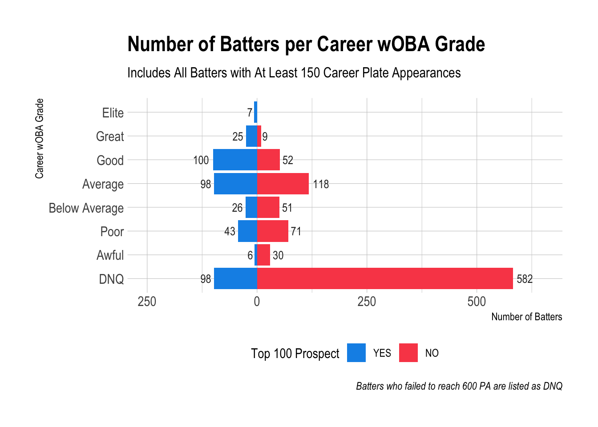
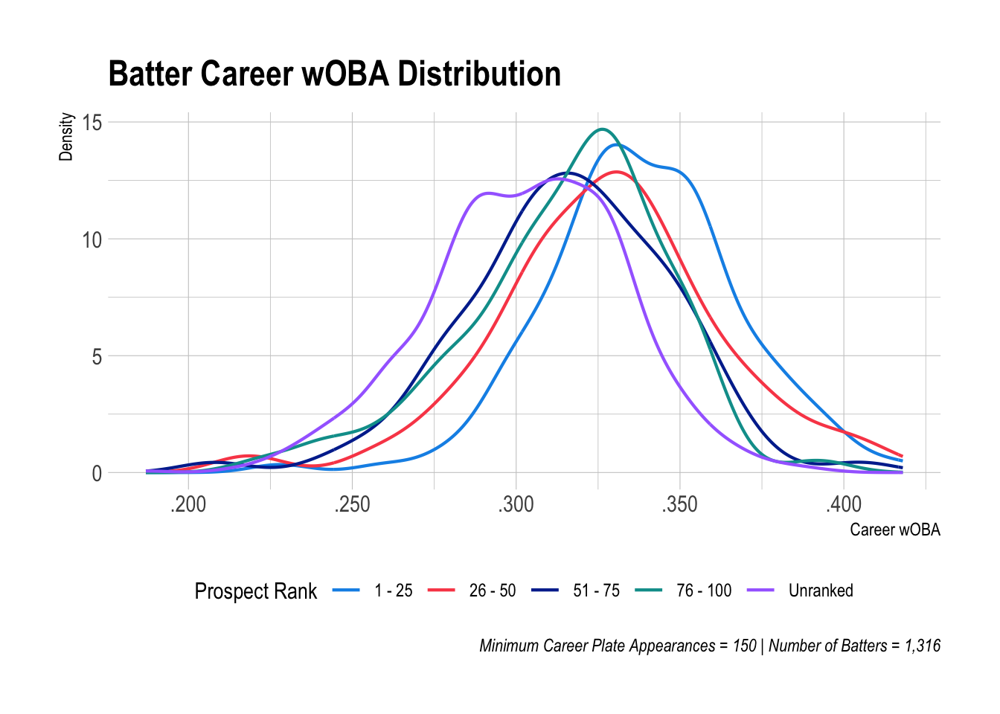
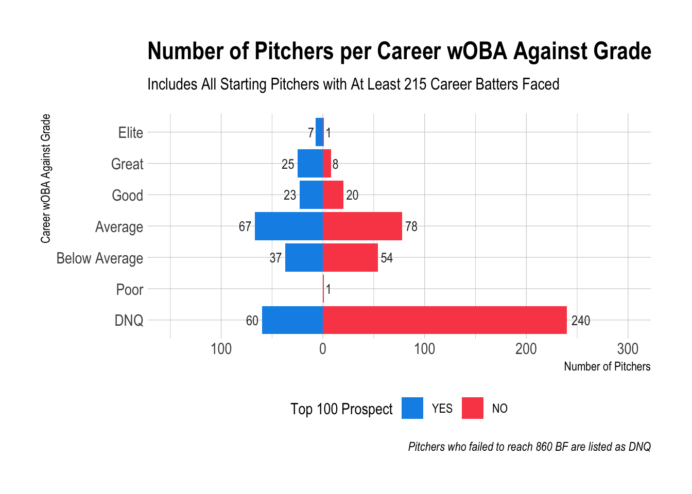
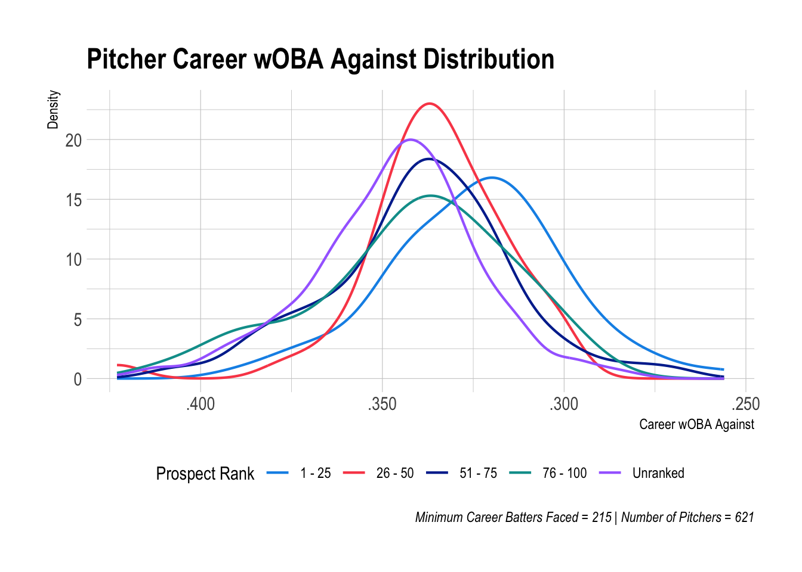

6 Career wOBA
6.1 Percentages vs. Numbers
As helpful as it is to know the percentage of players with different wOBA grades by prospect rank and initial performance, we miss something important if we do not look at the total number of players.
Much of this is because there are so many more unranked prospects than ranked. Even a smaller percentage of unranked prospects with good career outcomes could indicate a number that is close to the corresponding number of a higher percentage of ranked prospects.
Since as dynasty managers we are interested in getting the best young players on our teams, it’s helpful to know how big the respective pools of players are from which we can draw.
6.2 Number of Batters
The demographers among us are to thank for population pyramids, which we can employ for our purposes to compare the number of ranked and unranked prospects with different career wOBA grades.
To break this down: if you were playing in a dynasty league from 1990 to 2010, there were a little less than 200 batters who debuted over that time period with a Good career wOBA or better. This is about ten batters each year on average. Seven of those ten were batters who were top 100 prospects. Three of them were unranked prospects.
6.3 Top 100 Batters
Since we’ve all rightly fallen in love with top 100 prospect lists, I thought it would be valuable to compare the top 100 ranked prospects and the top 100 unranked prospects from this period based on career wOBA.
If you were trying to hit the lottery as a dynasty manager with unranked prospects, who would you have wound up with? What would the best case scenario have been for you?
Important notes for these lists:
- These prospects ranks are from Baseball America.
- Career wOBA is as of the end of the 2020 season. Some players were still active.
- Some unranked prospects were ranked at one point (Josh Hamilton is probably the most famous example), but they fell off the top 100 list prior to when they debuted.
Top 100 Batters by Career wOBA
| Name | Career wOBA | Prospect Rank |
|---|---|---|
| Manny Ramirez | 0.418 | 7 |
| Frank Thomas | 0.415 | 29 |
| Todd Helton | 0.405 | 11 |
| Jim Thome | 0.405 | 51 |
| Jeff Bagwell | 0.404 | 32 |
| Lance Berkman | 0.400 | 37 |
| Joey Votto | 0.400 | 44 |
| Chipper Jones | 0.396 | 3 |
| Alex Rodriguez | 0.395 | 1 |
| Miguel Cabrera | 0.393 | 12 |
| David Ortiz | 0.392 | 84 |
| Carlos Delgado | 0.390 | 5 |
| Vladimir Guerrero | 0.390 | 2 |
| Mike Piazza | 0.389 | 38 |
| Albert Pujols | 0.387 | 42 |
| Mo Vaughn | 0.384 | 10 |
| Tim Salmon | 0.382 | 5 |
| Giancarlo Stanton | 0.381 | 3 |
| Ryan Braun | 0.379 | 26 |
| Freddie Freeman | 0.379 | 17 |
| Bobby Abreu | 0.378 | 38 |
| J.D. Drew | 0.378 | 1 |
| Moises Alou | 0.377 | 37 |
| Prince Fielder | 0.377 | 11 |
| Nomar Garciaparra | 0.376 | 10 |
| Magglio Ordonez | 0.375 | 56 |
| Travis Hafner | 0.374 | 46 |
| David Wright | 0.373 | 21 |
| Ryan Klesko | 0.372 | 15 |
| Bernie Williams | 0.372 | 11 |
| Mark Teixeira | 0.371 | 1 |
| Nick Johnson | 0.370 | 13 |
| Derrek Lee | 0.369 | 47 |
| Andrew McCutchen | 0.369 | 33 |
| Scott Rolen | 0.368 | 13 |
| Troy Tulowitzki | 0.368 | 15 |
| Adam Dunn | 0.367 | 33 |
| Troy Glaus | 0.365 | 36 |
| Ray Lankford | 0.365 | 51 |
| Hanley Ramirez | 0.364 | 30 |
| Jason Bay | 0.363 | 74 |
| Shawn Green | 0.363 | 6 |
| Edwin Encarnacion | 0.362 | 56 |
| Ryan Howard | 0.361 | 27 |
| Paul Konerko | 0.361 | 2 |
| Carlos Quentin | 0.361 | 20 |
| Pat Burrell | 0.360 | 2 |
| Shin-Soo Choo | 0.360 | 51 |
| Jack Cust | 0.360 | 100 |
| Cliff Floyd | 0.360 | 1 |
| Derek Jeter | 0.360 | 6 |
| Adrian Gonzalez | 0.359 | 52 |
| Carlos Gonzalez | 0.359 | 22 |
| Trot Nixon | 0.359 | 99 |
| Carlos Beltran | 0.358 | 14 |
| Joe Mauer | 0.358 | 1 |
| Aramis Ramirez | 0.357 | 5 |
| Reggie Sanders | 0.357 | 11 |
| Richard Hidalgo | 0.356 | 19 |
| Hideki Matsui | 0.356 | 8 |
| Buster Posey | 0.356 | 7 |
| Chase Utley | 0.356 | 81 |
| Jayson Werth | 0.356 | 94 |
| Andre Ethier | 0.355 | 89 |
| Ben Grieve | 0.355 | 1 |
| Reggie Jefferson | 0.355 | 49 |
| Jermaine Dye | 0.354 | 30 |
| Geoff Jenkins | 0.354 | 95 |
| Jeromy Burnitz | 0.353 | 61 |
| Sean Casey | 0.353 | 20 |
| Javy Lopez | 0.353 | 17 |
| Justin Morneau | 0.353 | 16 |
| Dave Nilsson | 0.353 | 29 |
| Justin Upton | 0.353 | 9 |
| Dmitri Young | 0.353 | 29 |
| Milton Bradley | 0.352 | 36 |
| Andruw Jones | 0.352 | 1 |
| Chuck Knoblauch | 0.352 | 72 |
| Dustin Pedroia | 0.352 | 77 |
| Carlos Santana | 0.352 | 10 |
| Tony Clark | 0.351 | 86 |
| Carlos Lee | 0.351 | 28 |
| Kenny Lofton | 0.351 | 28 |
| Victor Martinez | 0.351 | 16 |
| Ryan Zimmerman | 0.351 | 15 |
| Adrian Beltre | 0.350 | 3 |
| Brad Fullmer | 0.350 | 14 |
| Matt Kemp | 0.350 | 96 |
| Tino Martinez | 0.350 | 18 |
| Phil Nevin | 0.350 | 59 |
| Carlos Pena | 0.350 | 5 |
| Grady Sizemore | 0.350 | 9 |
| Eric Chavez | 0.349 | 3 |
| Michael Cuddyer | 0.349 | 17 |
| Tim Naehring | 0.349 | 46 |
| David Segui | 0.349 | 93 |
| Raul Mondesi | 0.348 | 51 |
| Alfonso Soriano | 0.348 | 27 |
| Nick Swisher | 0.348 | 24 |
| Russell Branyan | 0.347 | 82 |
| Name | Career wOBA | Prospect Rank |
|---|---|---|
| Jason Giambi | 0.394 | NA |
| Brian Giles | 0.387 | NA |
| Jim Edmonds | 0.385 | NA |
| Matt Holliday | 0.383 | NA |
| Rusty Greer | 0.378 | NA |
| Josh Donaldson | 0.375 | NA |
| Kevin Youkilis | 0.375 | NA |
| Erubiel Durazo | 0.373 | NA |
| Nelson Cruz | 0.371 | NA |
| Josh Hamilton | 0.368 | NA |
| John Jaha | 0.367 | NA |
| Jeff Kent | 0.367 | NA |
| Jorge Posada | 0.367 | NA |
| Mike Sweeney | 0.366 | NA |
| Luis Gonzalez | 0.364 | NA |
| Brad Hawpe | 0.364 | NA |
| Richie Sexson | 0.363 | NA |
| Jose Bautista | 0.362 | NA |
| Justin Turner | 0.361 | NA |
| Robinson Cano | 0.360 | NA |
| Morgan Ensberg | 0.359 | NA |
| Matt Stairs | 0.359 | NA |
| Josh Willingham | 0.359 | NA |
| Corey Koskie | 0.357 | NA |
| John Valentin | 0.357 | NA |
| Craig Wilson | 0.357 | NA |
| Mike Napoli | 0.355 | NA |
| Bobby Higginson | 0.353 | NA |
| Kevin Millar | 0.353 | NA |
| Bill Mueller | 0.352 | NA |
| Luke Scott | 0.352 | NA |
| Jeff Cirillo | 0.351 | NA |
| Frank Catalanotto | 0.350 | NA |
| Brian Daubach | 0.350 | NA |
| Jose Vidro | 0.350 | NA |
| Corey Hart | 0.348 | NA |
| Matt Lawton | 0.348 | NA |
| Garrett Atkins | 0.347 | NA |
| Greg Colbrunn | 0.347 | NA |
| Dave Hollins | 0.347 | NA |
| Jim Leyritz | 0.347 | NA |
| Olmedo Saenz | 0.347 | NA |
| Bernard Gilkey | 0.346 | NA |
| Bubba Trammell | 0.346 | NA |
| Marty Cordova | 0.345 | NA |
| John Vander Wal | 0.345 | NA |
| Michael Brantley | 0.344 | NA |
| Raul Ibanez | 0.344 | NA |
| Orlando Merced | 0.343 | NA |
| Melvin Mora | 0.343 | NA |
| Michael Morse | 0.343 | NA |
| Fernando Tatis | 0.343 | NA |
| Henry Rodriguez | 0.342 | NA |
| Seth Smith | 0.342 | NA |
| Michael Young | 0.342 | NA |
| Ben Zobrist | 0.342 | NA |
| Scott Hatteberg | 0.341 | NA |
| Dan Uggla | 0.341 | NA |
| David Freese | 0.340 | NA |
| Ryan Ludwick | 0.340 | NA |
| Daniel Murphy | 0.340 | NA |
| Vinny Castilla | 0.339 | NA |
| Mike Lieberthal | 0.339 | NA |
| Al Martin | 0.339 | NA |
| Marcus Thames | 0.339 | NA |
| Sean Berry | 0.338 | NA |
| Lucas Duda | 0.338 | NA |
| John Jaso | 0.338 | NA |
| Ian Kinsler | 0.338 | NA |
| Mark Reynolds | 0.338 | NA |
| Casey Blake | 0.337 | NA |
| David Dellucci | 0.337 | NA |
| Doug Mientkiewicz | 0.337 | NA |
| Jason Varitek | 0.337 | NA |
| Allen Craig | 0.336 | NA |
| David DeJesus | 0.336 | NA |
| Matt Joyce | 0.336 | NA |
| Troy O’Leary | 0.336 | NA |
| Herbert Perry | 0.336 | NA |
| Quilvio Veras | 0.336 | NA |
| Shane Victorino | 0.336 | NA |
| Eric Young | 0.336 | NA |
| Jonny Gomes | 0.335 | NA |
| Mike Jacobs | 0.335 | NA |
| Mark Loretta | 0.335 | NA |
| Kevin Mench | 0.335 | NA |
| Ryan Church | 0.334 | NA |
| Chad Curtis | 0.334 | NA |
| Matt Diaz | 0.334 | NA |
| Jeff Frye | 0.334 | NA |
| Pedro Munoz | 0.334 | NA |
| Joe Randa | 0.334 | NA |
| Ben Broussard | 0.333 | NA |
| Jacque Jones | 0.333 | NA |
| David Murphy | 0.333 | NA |
| Cody Ross | 0.333 | NA |
| Aaron Rowand | 0.333 | NA |
| Pablo Sandoval | 0.333 | NA |
| Chad Tracy | 0.333 | NA |
| Neil Walker | 0.333 | NA |
What do you think?! I suspect there could be some healthy debate in comparing and contrasting these lists. After looking at them, the limitations I mentioned at the beginning become more apparent. Namely, wOBA does not fully capture a player’s value, especially in the context of fantasy.
Having said that, the contrast between top ranked prospects and top unranked prospects seems stark in my eyes.
The best you could have hoped for from the unranked prospect pool was probably Robinson Cano, Jeff Kent, Jason Giambi, Matt Holliday, Jim Edmonds, Brian Giles. Ian Kinsler was a fantasy darling and likely some others. Notable fantasy impact players are far more plentiful among ranked prospects. This is no surprise, but the degree of contrast may be surprising.
You may be interested in the median and mean prospect rank for the batting prospects on the ranked list (an even set of numbers): median of 21.5, mean of 31.
6.4 Career wOBA by Prospect Rank
At this point, I think I’ve sufficiently conveyed the difference in career outcomes between ranked and unranked batting prospects. One more density plot is worth adding though.

6.5 Number of Pitchers

The distribution of pitchers is very similar to the distribution of batters. A notable difference is that no pitchers fell into the Awful wOBA Against grade and only one was Poor. Since position players can contribute in other ways beyond batting, they are able to perform poorly as a batter and remain in the league. Pitchers who are bad at pitching are bad at everything since pitching is all they do.
Let’s do a little more napkin math. 84 pitchers had a career wOBA Against grade of Good or better, which translates to about four entering the player pool each year over the time period of focus. Two thirds of those pitchers were ranked prospects, one third unranked. So every three years, about twelve good pitchers would emerge—eight were ranked prospects, four were unranked.
6.6 Top 50 Pitchers
Who were the best pitchers? And how much success would you have had trying to hit the lottery with unranked pitching prospects?
Since there are less pitchers than batters, we’ll look at the top 50 starting pitchers.
Again, these ranks are from Baseball America. Please reference the notes above for batters.
Top 50 Starting Pitchers by Career wOBA Against
| Name | Career wOBA Against | Prospect Rank |
|---|---|---|
| Clayton Kershaw | 0.256 | 7 |
| Pedro Martinez | 0.272 | 62 |
| Chris Sale | 0.274 | 20 |
| Stephen Strasburg | 0.277 | 2 |
| Max Scherzer | 0.286 | 66 |
| Justin Verlander | 0.286 | 8 |
| Madison Bumgarner | 0.288 | 14 |
| David Price | 0.291 | 2 |
| Roy Halladay | 0.294 | 12 |
| Zack Greinke | 0.296 | 14 |
| Jake Arrieta | 0.297 | 99 |
| Felix Hernandez | 0.297 | 2 |
| Josh Johnson | 0.297 | 80 |
| Cole Hamels | 0.300 | 68 |
| Jake Peavy | 0.301 | 28 |
| Matt Cain | 0.302 | 10 |
| Carlos Carrasco | 0.303 | 52 |
| Johnny Cueto | 0.303 | 34 |
| Cliff Lee | 0.303 | 30 |
| Gio Gonzalez | 0.304 | 97 |
| Rich Harden | 0.304 | 29 |
| Mike Mussina | 0.304 | 19 |
| Roy Oswalt | 0.304 | 13 |
| Mark Prior | 0.304 | 2 |
| Kerry Wood | 0.304 | 4 |
| Tim Lincecum | 0.305 | 11 |
| Jered Weaver | 0.305 | 57 |
| Carlos Zambrano | 0.306 | 80 |
| CC Sabathia | 0.307 | 7 |
| Josh Beckett | 0.308 | 1 |
| Jon Lester | 0.308 | 22 |
| Jason Schmidt | 0.309 | 11 |
| Mike Minor | 0.310 | 37 |
| Brandon Morrow | 0.310 | 87 |
| Jeff Samardzija | 0.311 | 79 |
| Ben Sheets | 0.311 | 5 |
| Clay Buchholz | 0.312 | 4 |
| Francisco Liriano | 0.312 | 6 |
| A.J. Burnett | 0.313 | 20 |
| Erik Bedard | 0.314 | 90 |
| Chris Carpenter | 0.314 | 28 |
| Jhoulys Chacin | 0.314 | 71 |
| Tommy Hanson | 0.314 | 4 |
| Anibal Sanchez | 0.314 | 40 |
| Chad Billingsley | 0.315 | 7 |
| Kelvim Escobar | 0.316 | 67 |
| Matt Garza | 0.316 | 21 |
| Ted Lilly | 0.316 | 66 |
| Javier Vazquez | 0.316 | 83 |
| Barry Zito | 0.316 | 41 |
| Name | Career wOBA Against | Prospect Rank |
|---|---|---|
| Johan Santana | 0.287 | NA |
| Brandon Webb | 0.293 | NA |
| Rich Hill | 0.297 | NA |
| Hiroki Kuroda | 0.297 | NA |
| Mat Latos | 0.297 | NA |
| Tim Hudson | 0.299 | NA |
| Adam Wainwright | 0.299 | NA |
| C.J. Wilson | 0.306 | NA |
| Dan Haren | 0.307 | NA |
| Tyson Ross | 0.310 | NA |
| Doug Fister | 0.311 | NA |
| Chris Young | 0.311 | NA |
| Jaime Garcia | 0.312 | NA |
| Derek Lowe | 0.312 | NA |
| Alex Fernandez | 0.313 | NA |
| Shaun Marcum | 0.313 | NA |
| Marco Estrada | 0.314 | NA |
| Juan A. Guzman | 0.314 | NA |
| Orlando Hernandez | 0.315 | NA |
| Francisco Cordova | 0.316 | NA |
| J.A. Happ | 0.316 | NA |
| Charlie Morton | 0.317 | NA |
| John Lackey | 0.318 | NA |
| Kevin Millwood | 0.318 | NA |
| Jose Rosado | 0.318 | NA |
| Ervin Santana | 0.318 | NA |
| Justin Thompson | 0.318 | NA |
| Hideo Nomo | 0.319 | NA |
| Travis Wood | 0.319 | NA |
| Mark Buehrle | 0.320 | NA |
| Jeff Fassero | 0.321 | NA |
| Jon Lieber | 0.321 | NA |
| Andy Ashby | 0.322 | NA |
| R.A. Dickey | 0.322 | NA |
| James Shields | 0.322 | NA |
| Ismael Valdez | 0.322 | NA |
| Jason Vargas | 0.322 | NA |
| Scott Baker | 0.323 | NA |
| Brian Lawrence | 0.323 | NA |
| Shane Reynolds | 0.323 | NA |
| Noah Lowry | 0.324 | NA |
| Chien-Ming Wang | 0.324 | NA |
| Brad Radke | 0.325 | NA |
| Wandy Rodriguez | 0.325 | NA |
| Scott Sanders | 0.325 | NA |
| Butch Henry | 0.326 | NA |
| Denny Neagle | 0.326 | NA |
| Brock Peterson | 0.326 | NA |
| Scott Feldman | 0.327 | NA |
| Dillon Gee | 0.327 | NA |
There are some gems on the unranked list, Johan Santana most of all. Santana was the pitcher with the most improvement from his first roughly 50 innings pitched to the remainder of his career. His wOBA Against was .417 after 215 batters faced and decreased all the way to .287.
Beyond Santana, Webb, Hudson, Wainwright, and Buehrle stick out to me. Rich Hill being so high is a surprise and also touches on another previously mentioned limitation that some active players are still included. His wOBA Against has certainly jumped since 2020.
What becomes more apparent in comparing and contrasting these lists is that longevity is not explicitly included here. For instance, I’d never heard of Francisco Cordova. He only pitched five seasons—four full ones—for the Pirates in the late 90s/2000.
If we do some very rough math, ranked pitching prospects faced 404,128 batters while unranked prospects faced 335,758 in total. Sticking with our estimated ratio of 50 innings pitched per every 215 batters faced, those numbers translate to roughly 94,000 innings for ranked pitching prospects and 78,100 innings for unranked pitching prospects—a 16,000 inning difference, 320 more innings for each ranked pitching prospect on average compared to unranked.
While the ratio of unranked pitching prospects to ranked pitching prospects with Good career wOBA Against grades or better is higher than the corresponding ratio for batters, the top 50 unranked pitchers are not convincing me that unranked pitching prospects are a better investment than unranked batting prospects. Like I said before, this is certainly a bit subjective and could be a good debate, but that’s my assessment.
The median and mean prospect rank for pitching prospects on the ranked list: median of 21.5, mean of 34.4.
6.7 Career wOBA Against by Prospect Rank

This density plot helps capture what we mentioned earlier. Top 25 pitching prospects are in a league of their own. Pitching prospects ranked 26 - 100 are more in a glob together, but pitching prospects ranked 26 - 50 are more likely to be average or below average than poor or awful compared to pitching prospects ranked 51 - 100. Unranked prospects are clearly the last horse in this race.